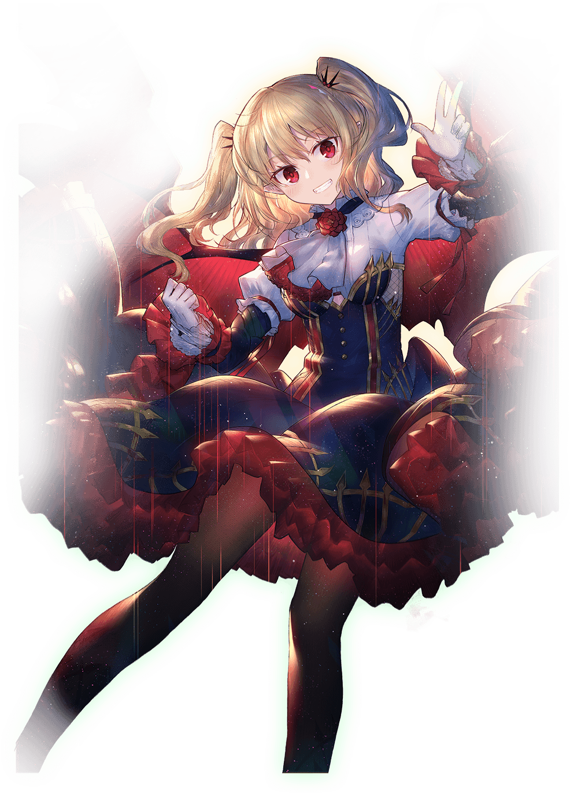
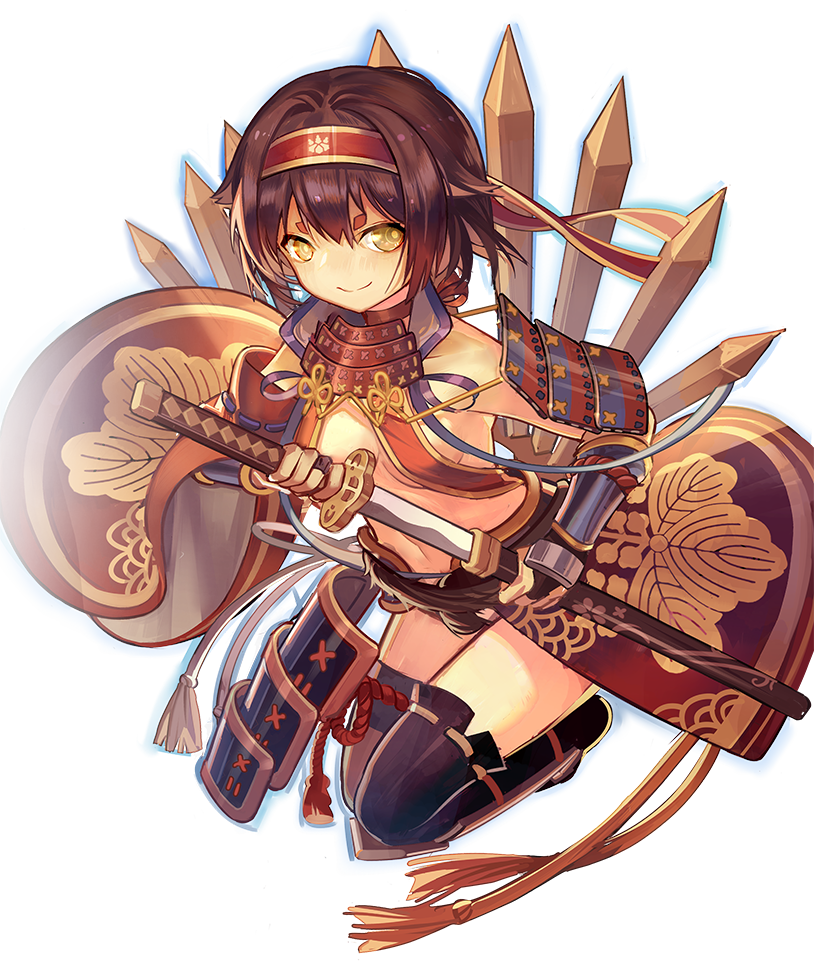
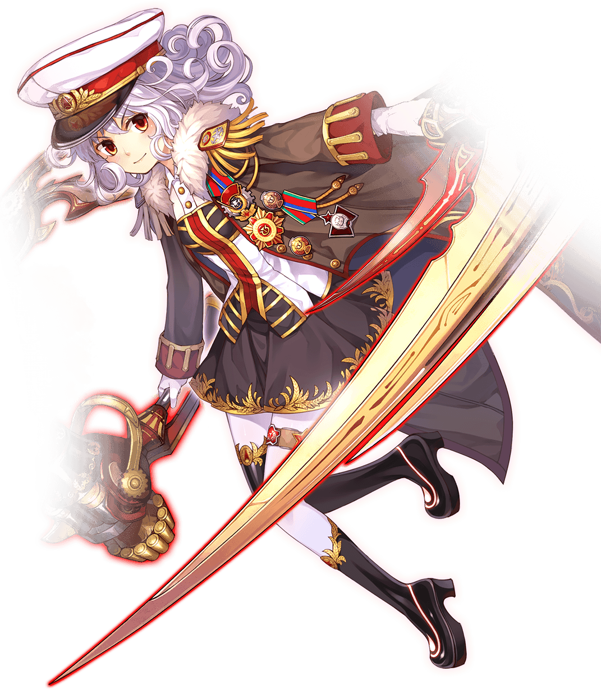
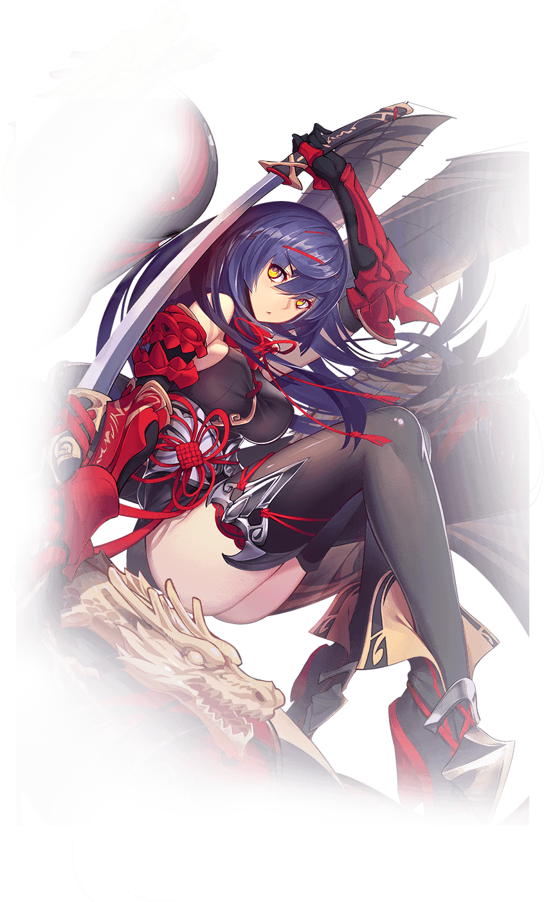

-
命汝为我献上最纯净的处女之血……没有的话，鸭血豆腐也行。
命汝为我献上最纯净的处女之血……没有的话，鸭血豆腐也行。
命汝为我献上最纯净的处女之血……没有的话，鸭血豆腐也行。
王权图鉴【迷之液体】看起来相当优雅的高脚杯，但里面装的可能是麻辣烫。
【夜巡的棘翼】身为月下古堡恶魔君王的双翼，同时保留了瓦拉几亚守护者的特征。
-
日本王？我要成为的可是天下人。
日本王？我要成为的可是天下人。
日本王？我要成为的可是天下人。
王权图鉴【狩物佛钉】关白行“天下刀狩”时，向全国发出刀狩令，征得无数名刀，在京都东山大佛殿熔炼出了这柄“佛钉”。
【日轮】关白背后的日轮是丰国大明神的象征，代表烁烁日光。
【家纹·五七桐】丰臣家的源流，来历可疑，但关白本人非常喜爱。
-
帝国的闪电再次击落
王权图鉴【已确认飞行体】飞碟状机械结构，纳粹科技的结晶。
【德意志第四帝国】在月球表面建立的庞大帝国，又名雅利安第一帝国。
【地图笔】当元首把笔摔到地图上的时候，会发生奇妙的事。
-
对钢铁之月降下苏维埃的制裁！
王权图鉴【呼吸】名字简洁的蒸汽动力锤。工厂的烟雾是祖国的呼吸，工业化的苏维埃万岁！
【灰烬】名字简洁的巨型金属镰刀。
-
主人，您是要先吃饭，还是先洗澡，还是……先吃我一剑！
王权图鉴【欧冶子五名剑】半透明的青色浮游之剑,由越王本人的真气操作,全方位攻击单位
【重型女仆武装】覆盖着青铜铠甲的黑白裙装。其设计思路为越王的人生信条：“战斗是女仆的宿命。”
-
越过美洲继续航行是回不到大明的，因为地球要到1522年才会变圆。
王权图鉴【佩刀·锦衣卫之春】永乐皇帝爱用的绣春刀，邪恶组织“锦衣卫”的象征。
【舰装·美洲征夷宝船】当世最大的宝船舰队。锦衣夜航，美洲征夷！
-
天朝物产丰盈，无所不有，原不藉外夷货物，以通有无……但美食不在此列。
王权图鉴【摹画晶龙】王权之龙的结晶化，由手中的糖画展开而成，同时具备了龙脉与美食之脉的二重属性。
【山河吉服】在2056年的江南微服私访的少女皇帝，将自己的龙袍变幻成了适合现代审美的衣装，毫无破绽……


- 
- 
- 
- 